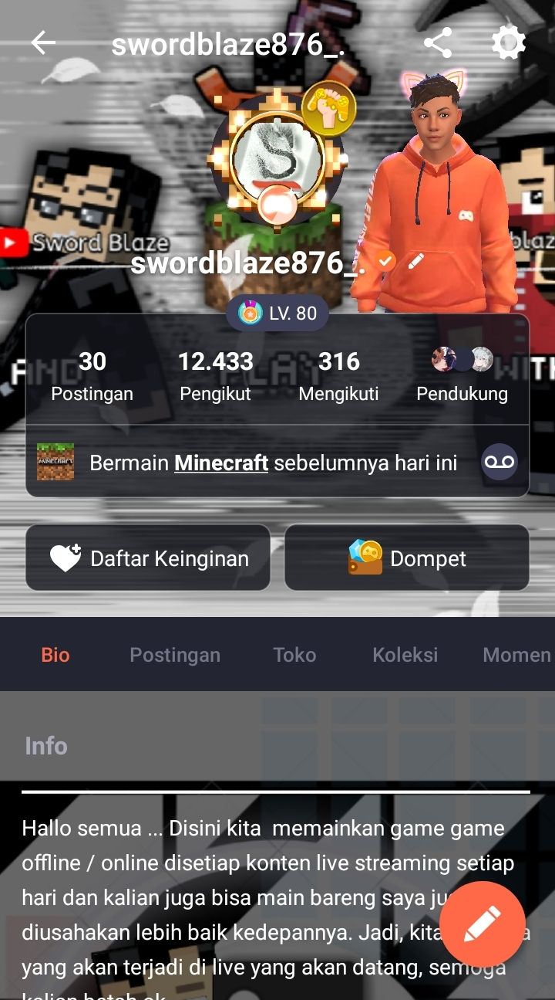
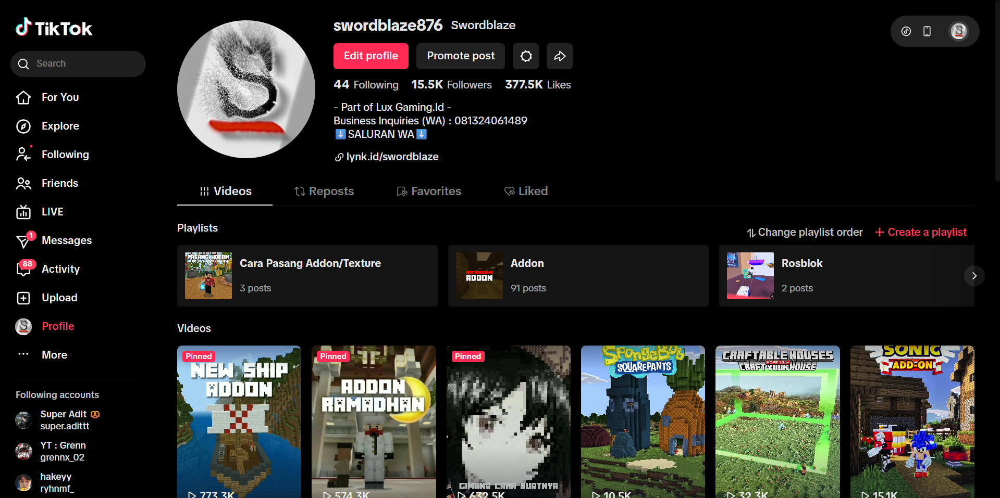
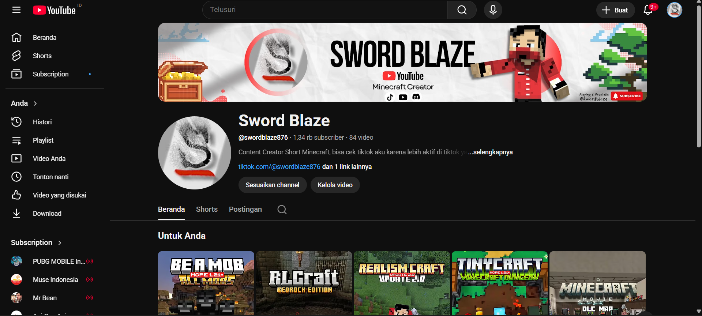
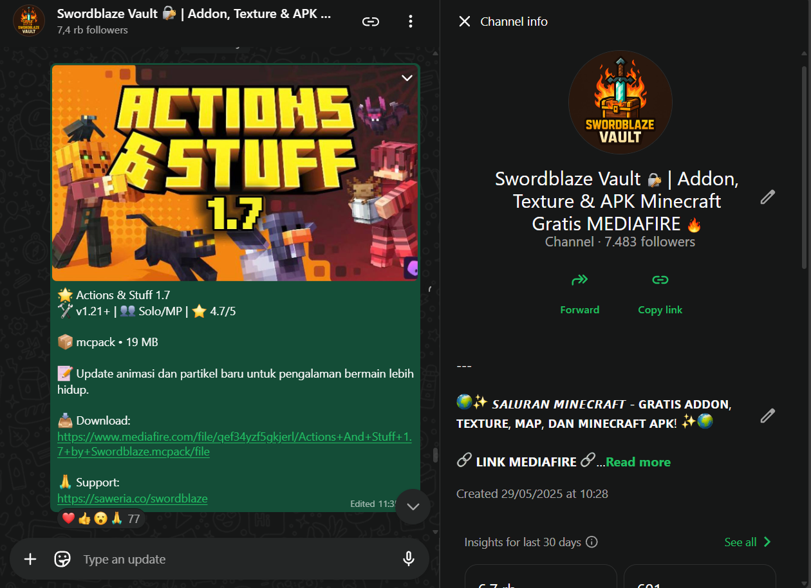
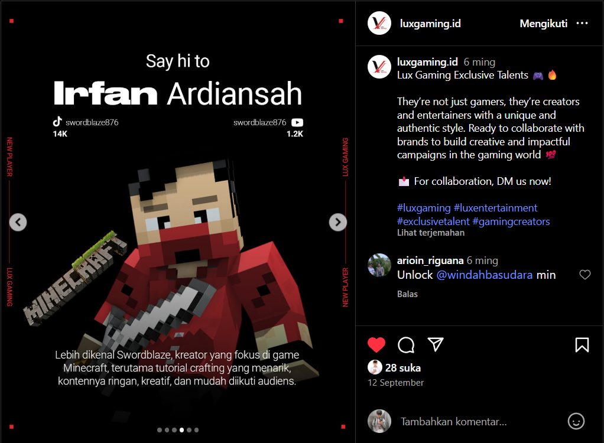

Omlet Arcade
Tempat saya mulai live streaming pertama kali. Dari sinilah saya belajar berinteraksi dengan penonton, membuat turnamen, hingga menjadi streamer terverifikasi. Pengalaman ini menjadi fondasi saya di dunia konten kreatif

Tempat saya mulai live streaming pertama kali. Dari sinilah saya belajar berinteraksi dengan penonton, membuat turnamen, hingga menjadi streamer terverifikasi. Pengalaman ini menjadi fondasi saya di dunia konten kreatif

Platform utama saya sekarang. Saya fokus membuat konten Minecraft review addon Marketplace dan berbagi versi gratisnya. Setiap video jadi ruang eksplorasi kreativitas saya di dunia Bedrock Edition

Harapan kedepannya dapat membuat video panjang dan tutorial seputar Minecraft. Harapannya channel ini jadi tempat berbagi pengetahuan dan hiburan yang lebih mendalam untuk komunitas gamer

Pada saluran ini aku seringkali membagikan link download addon dan sebagai cara aku berinteraksi dengan followers aku, bukan cuman share addon tetapi wadah untuk aku berkomunikasi dengan followers

Aku juga merupakan salah satu talent dari Lux Gaming, sebuah KOL Gaming Agency yang membantu aku dalam proses manajemen dan pengembangan karier di dunia gaming